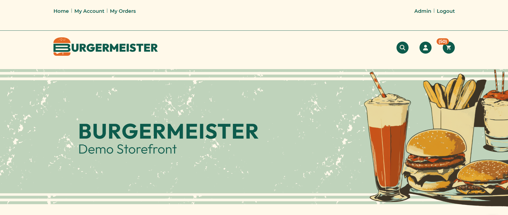
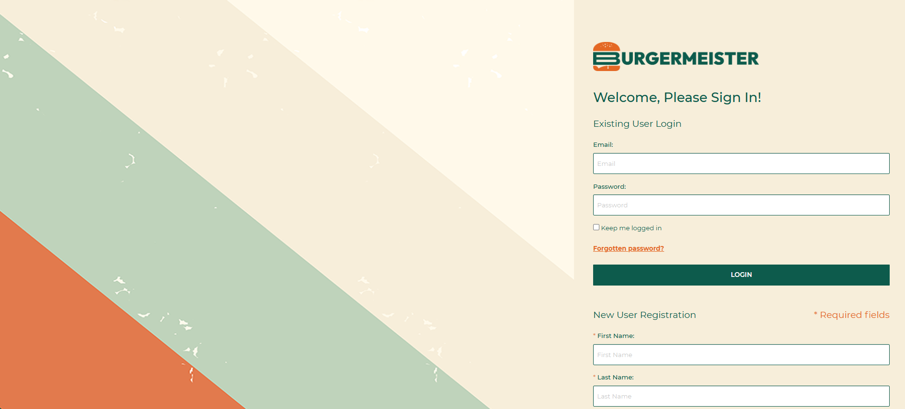
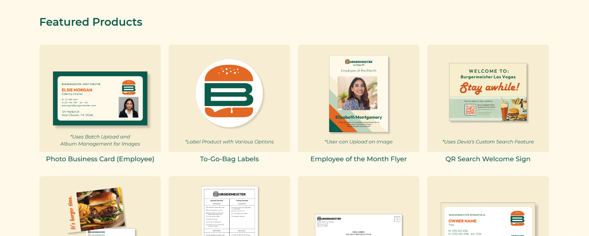
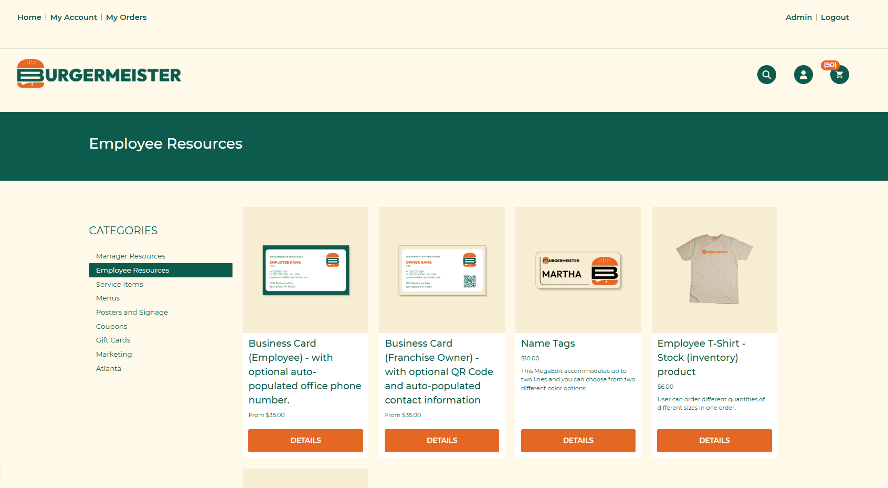
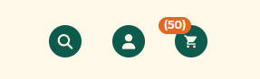

Burgermeister — eCommerce Storefront Design
Web-to-Print Demo Store · Devia Software
Burgermeister is a demo storefront built on the Infigo web-to-print platform to showcase what Devia Software's eCommerce solutions can look like when fully realized. Rather than presenting prospects with a generic, out-of-the-box Infigo store, the goal was to build something that felt like a real brand, proving that the platform could support a polished, custom UI that matched a client's identity from top to bottom.
Overview
Burgermeister became a sales-facing proof of concept designed to help print shop prospects imagine a far more branded storefront experience than the default platform presentation.
The Challenge
Infigo storefronts are functional by default, but visually generic. This demo had to make Devia's argument immediately: that a storefront could feel branded, intentional, and sticky enough for prospects to picture their own clients inside it.
Design Decisions
The brand direction leaned into a retro diner aesthetic with warm cream backgrounds, muted sage green, and burnt orange accents tied closely to the logo and interface details. The hero banner uses custom illustration and vintage food imagery to set the mood without leaning on stock photography, while the typography stays clean and modern so the site still feels usable instead of themed for theme's sake.
The login page carries that identity forward through bold diagonal color blocks, and the navigation, iconography, footer, and category presentation were all styled to feel cohesive rather than templated. Featured products were chosen to demonstrate specific Infigo capabilities, including batch-upload photo business cards, customizable label products, employee-of-the-month flyers with image upload, and QR-based signage.
My Role
I designed all visual assets for the storefront, including the hero banner illustration, category graphics, product templates, login page layout, and the overall UI styling applied through custom CSS and HTML inside the Infigo platform. I also built and maintained the template products and managed the front-end code throughout.
Result
Burgermeister became Devia's primary demo store and was used in sales pitch decks and live presentations to prospective print shop clients. It helped demonstrate that Infigo, in the right hands, could support a storefront experience that felt distinctly branded and far more custom than prospects expected.

The homepage hero sets the tone immediately, combining the logo, soft retro palette, and illustrated diner imagery to make the storefront feel like a real brand instead of a stock demo.

The login page extends the visual system into a usually utilitarian screen, using diagonal brand-color blocks and simplified layout choices to keep the experience cohesive from the first interaction.

The featured products grid was built to showcase platform capabilities in a tangible way, pairing the brand styling with examples like photo cards, flyer customization, labels, and QR-based signage.

Category pages were customized to feel structured and easy to browse, with branded navigation, clearer product hierarchy, and templates that demonstrate how multiple storefront sections can still feel unified.

Even small UI details like the search, account, and cart icons were treated as part of the brand system, helping the overall storefront feel intentional rather than assembled from defaults.